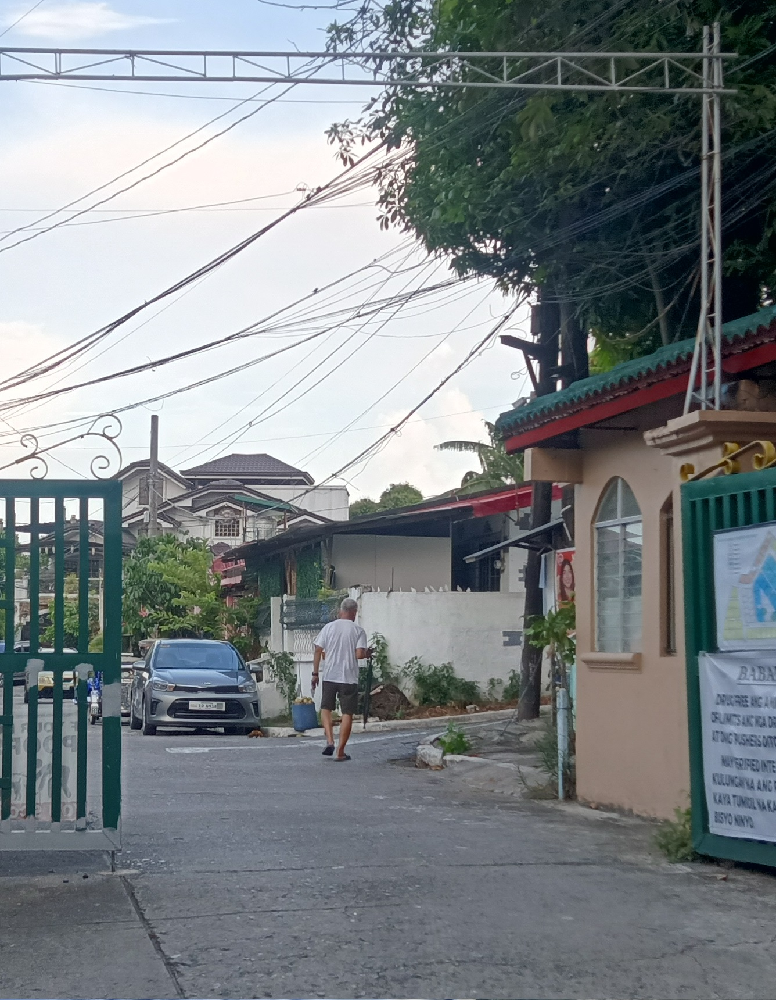
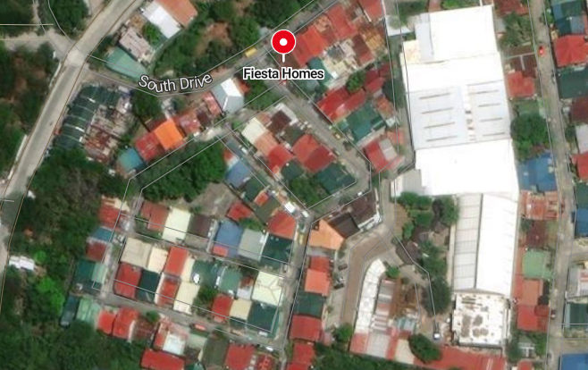

Welcome to the Fiesta Homes Subdivison
this is a website made for the citizens of the subdivision to better understand their home and to have an easy access to any info such as mass, events and daily routine such as garbage collection, water delivery and more.
About us
Fiesta Homes is a homeowners association established around the late 1980s, located in Barangay San Antonio, t

The Map for Fiesta Homes located in san antonio, San Pedro City, Laguna
A small buzzling community of homeowners that have been situated here for three decades
×